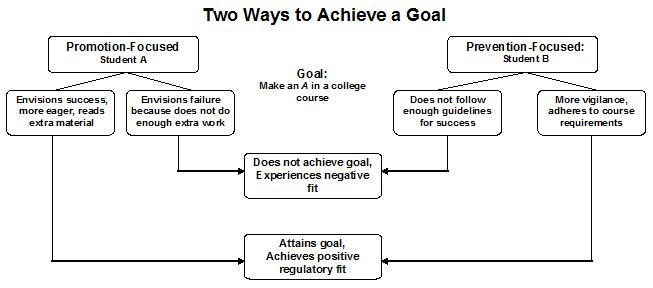
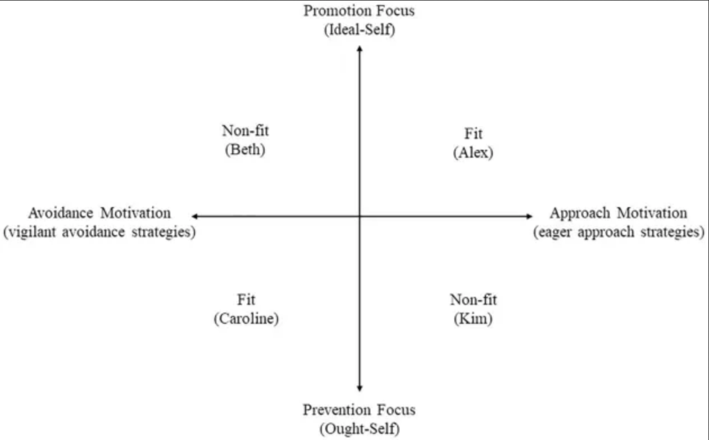
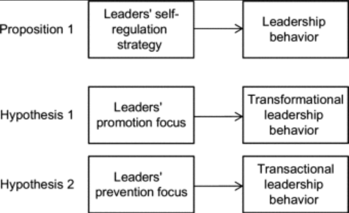
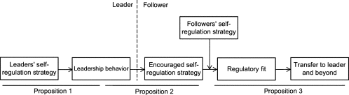

### Goal pursuit / Conflict of styles “Do not think of knocking out another person's brains because he differs in opinion from you. It would be as rational to knock yourself on the head because you differ from yourself ten years ago.” ― Horace Mann “Resolution, like responsibility, is a product of ownership, and kids can't resolve a conflict until they figure out how they contributed to it.” ― Richard Eyre // Name: Jukka Nikki, Identity: Programmer, Since: 6502 // Promotion focused, Idealistic, Reflective
### [Regulatory Focus Theory](https://en.wikipedia.org/wiki/Regulatory_focus_theory) Regulatory Focus Theory (RFT) is a psychological framework that explains how people's motivations and perceptions influence their goal-pursuit strategies. Understanding an employee's dominant focus can help managers frame goals and feedback more effectively to drive performance.
### [Promotion Focus](https://en.wikipedia.org/wiki/Regulatory_focus_theory) - Driven by growth, advancement, and accomplishment. - Focused on "ideals," hopes, and aspirations. - Uses eagerness-based strategies, where success is viewed as a "gain" and failure as a "non-gain".
### [Prevention Focus](https://en.wikipedia.org/wiki/Regulatory_focus_theory) - Driven by safety, security, and responsibility. - Focused on "oughts," obligations, and duties. - Uses vigilance-based strategies, where success is a "non-loss" and failure is a "loss".
### [Eagerness-based strategies](https://iaap-journals.onlinelibrary.wiley.com/doi/pdf/10.1111/apps.12376) proactive, promotion-focused approaches designed to achieve gains, fulfill aspirations, and accelerate goal attainment. These strategies focus on "making it happen" by utilizing enthusiasm and high engagement rather than caution and defense. While eagerness is a powerful motivator, it should be balanced with patience to avoid reckless, impulsive actions.
### [Vigilance-based strategies](https://en.wikipedia.org/wiki/Vigilance_(psychology)) Focus on maintaining a heightened state of awareness and systematic observation to identify threats, opportunities, or irregularities before they escalate. Vigilance-based strategies are critical in fields where human error or environmental changes pose significant risks to safety, performance, or competitive standing.
### [Optimal task success](https://en.wikipedia.org/wiki/Regulatory_focus_theory) <p></p> Different goals (promotion: to win vs. prevention: not to lose) direct self-regulation and influence what motivation strategy works best.
### [Regulatory Fit Theory](https://en.wikipedia.org/wiki/Regulatory_focus_theory) When people use strategies that fit their motivation: - eager approach for promotion - vigilant avoidance for prevention they feel more motivated, enjoy the task more, and often perform better
### [Approach (eager) Motivation](https://ssrlsig.org/wp-content/uploads/2017/11/routledgehandbooks-9780203888148-chapter1-andy.pdf) Behavior is energized by positive stimuli. It focuses on reaching desired outcomes, such as exercising to "feel strong and energized". This is often linked to higher levels of intrinsic motivation, happiness, and a proactive attitude.
### [Avoidance (vigilant) Motivation](https://ssrlsig.org/wp-content/uploads/2017/11/routledgehandbooks-9780203888148-chapter1-andy.pdf) Behavior is directed away from negative stimuli. It focuses on steering clear of undesired results, like exercising to "avoid gaining weight". While functional, it is frequently associated with increased stress, anxiety, and a higher risk of burnout.
#### [Focus / Motivation fit](https://www.frontiersin.org/journals/psychology/articles/10.3389/fpsyg.2022.807875/full) <p></p> Results are best when style correlates with tasks goals. Example: Preventers prove correctness / control risks, Promoters generate options / experiment.
#### [communication styles](https://pmc.ncbi.nlm.nih.gov/articles/PMC2607037/) promotion-focused prefer to take chances and to be overly inclusive when evaluating their options so as not to overlook anything that could allow advancement. prevention-focused prefer to play it safe and to be overly exclusive when evaluating their options so as not to commit to something that compromises their security.
#### [Leadership styles](https://www.sciencedirect.com/topics/social-sciences/regulatory-focus-theory) <p></p> leadership behavior is goal-pursuit behavior, and a certain style of leadership behavior is, in essence, a self-regulation strategy applied in this context.
#### [Transformative leadership](https://www.verywellmind.com/what-is-transformational-leadership-2795313) Main qualities of a transformational leader are authenticity, self-awareness, humility, collaboration, and interdependence. When a lot of creativity and innovation are important to success, a transformational style is often a beneficial approach. If the focus is on achieving a prescribed set of short-term goals, taking a more transactional approach might lead to less chaos and better results.
#### [Transactional leadership](https://www.verywellmind.com/what-is-transactional-leadership-2795317) Transactional leaders monitor followers carefully to enforce rules, reward success, and punish failure. They are tasked with letting group members know exactly what is expected, articulating the rewards of performing tasks well, explaining the consequences of failure, and offering feedback designed to keep workers on task. Transactional leaders don't encourage group members to be creative or to find new solutions to problems.
#### [Leader as role model](https://www.sciencedirect.com/topics/social-sciences/regulatory-focus-theory) Leadership behavior encourages followers to opt for a certain self-regulation strategy, because leaders serve as role models and, by their organizational standing, are entitled to communicate expectations By modeling behaviors like transparency, empathy, and accountability, leaders build trust and establish "how things are done," directly influencing employee behavior and performance.
#### [Leader / follower style fit](https://www.sciencedirect.com/topics/social-sciences/regulatory-focus-theory) <p></p> Fit between the encouraged strategy and followers’ own self-regulatory preference will lead to higher task involvement and more positive evaluations of the leader
#### [Adding up or breaking down?](https://www.sciencedirect.com/topics/social-sciences/regulatory-focus-theory) Promotion-oriented individuals thrive on progress and enjoy recognition of accomplishment. Conversely, individuals with a prevention orientation are cautiously optimistic and perceive the maintenance of status quo and avoidance of negative outcomes as their defining and dominant motive. Collaboration and specialization may create value, or interpersonal conflicts, which are hard to solve.
#### [Person-Environment fit](https://en.wikipedia.org/wiki/Person%E2%80%93environment_fit) Person–environment fit (P–E) is the degree to which individual and environmental characteristics match. P-E fit consist of compatibility aspects like - Person–organization fit (P-O) - Person–job fit (P–J) - Person–group fit (P–G) - Person–skill fit (P-S) Person–environment fit has been linked to a number of affective outcomes, including job satisfaction, organizational commitment, and intent to quit.
#### [Better fit, more results](https://pure.mpg.de/rest/items/item_3581969_6/component/file_3595771/content) Environments shape people, and at the same time, people are attracted to environments that fit their characteristics because fit facilitates the achievement of people’s desired life outcomes, such as relationship satisfaction, work success, and well-being. While PE fit seems relevant for several positive outcomes, such as job success and satisfaction with life and social relationships, PE misfit can predict negative consequences.
#### [Closing quotes](https://www.atlassian.com/blog/inside-atlassian/good-teamwork-quotes-youll-like) “A major reason capable people fail to advance is that they don’t work well with their colleagues.” – Lee Iacocca “Every organization needs the strengths of both the promotion- and the prevention-focused.” - Heidi Grant Halvorson “Fight for the things that you care about, but do it in a way that will lead others to join you.” – Ruth Bader Ginsburg
# END